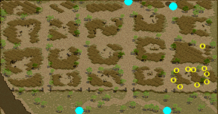
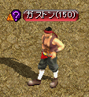

称号 薬師 赤石の民衆
search
ホーム
計算機
赤石史
リンク
お問合せ
more_vert
計算機
赤石史
リンク
お問合せ
メニュー
アイテム
スキル
モンスター
ダンジョン
クエスト
ギルド
韓国情報
雑学
トップ
>>
クエスト
>>
称号クエスト
薬師
<称号効果>
- ポーション効果
[110~200]
％
<説明>
- アイテム回復効率増加
称号効果
称号Lv
1
2
3
4
5
6
7
8
9
10
ポーション効果（％）
110
120
130
140
150
160
170
180
190
200
薬草を掘る年寄り
ケリオ
が手に入れて来いと言った材料は次の通りだ。
墓碑につく黄色コケ
、
石の上につく緑コケ
、
木の建物に生えた赤色のキノコ
、
木の切り株に生えた黄色のキノコ
、
つつじの花びら
、
亀の卵
材料を全部集めた。
ケリオ
の所に戻ろう。
受諾場所
ギルディル川 / ナス橋付近 ケリオ(82,10)
受諾条件
Lv1 （要求Lv2）
報酬
薬師Lv1
ギルディル川 / ナス橋付近
材料6個を集める。
黄色コケ
○
墓碑
(3,37)(73,189)(153,120)
緑コケ
○岩
(13,155)(123,39)(190,87)(191,9)
赤色のキノコ
△
木造小屋
(102,107)
黄色のキノコ
△
切り株
(83,70)(111,68)(115,136)
つつじの花びら
○
花
(47,23)(106,13)(141,56)
亀の卵
淡水亀
（Lv9）
ケリオ
へ
カラーハリー：悪魔の足の爪
未実装
新興王国ビガプールの
ガルミド
に、自分の病気を治す事ができる薬が作れる
薬師ボルチ
を訪ねるように頼まれた。
薬師ボルチ
は、ウェテンロード / ケルチ大橋付近にいるという。
ウェテンロード / ケルチ大橋付近の
薬師ボルチ
が、ウェテンロード / デフヒルズ東部地域に生育する
カラーハリーまたの名を悪魔の足の爪
という薬草を手に入れてきてほしいと頼んできた。
カラーハリーまたの名を悪魔の足の爪
は、ウェテンロード / デフヒルズ東部地域の
西部砂漠
付近で見つけることができるという。
ウェテンロード / ケルチ大橋付近の
薬師ボルチ
に頼まれた
カラーハリーまたの名を悪魔の足の爪
を 5個すべて手に入れた。
薬師ボルチ
のところに戻ろう。
ウェテンロード / ケルチ大橋付近の
薬師ボルチ
が、
カラーハリーまたの名を悪魔の足の爪
を発酵させることができる
アークディ
を訪ねるように言われた。
アークディ
は、西プラトン街道 / グレートフォレスト入口にいるらしい。
西プラトン街道 / グレートフォレスト入口の
アークディ
が、
薬草発酵器
を盗んだ
サンシーフ
を倒して、取り戻してきてほしいと頼んできた。
サンシーフ
は、西プラトン街道 / アリアン東部地域の
廃墟の南部砂漠
にいるという。
西プラトン街道 / アリアン東部地域の
サンシーフ
から、
薬草発酵器
を見つけた。西プラトン街道 / グレートフォレスト入口の
アークディ
を訪ねて、
カラーハリーの水薬
を作ったら、新興王国ビガプールの
ガルミド
のところに行こう。
受諾場所
新興王国ビガプール ガルミド(27,132)
受諾条件
Lv50
未実装
報酬
経験値？ 薬師Lv2
ウェテンロード / ケルチ大橋付近
薬師ボルチ
(131,9)へ
ウェテンロード / デフヒルズ東部地域
草
をクリック、ダメージを受ける
(50,200)付近に40箇所あるが、少し時間が経つと何度でもクリックできる。
ウェテンロード / ケルチ大橋付近
薬師ボルチ
へ
西プラトン街道 / グレートフォレスト入口
アークディ
(62,75)へ
西プラトン街道 / アリアン東部地域
サンシーフ
（Lv50）を倒す
西プラトン街道 / グレートフォレスト入口
アークディ
へ
新興王国ビガプール
ガルミド
へ
もっと！もっと！もっと！
未実装
砂漠村リンケンの
オルシアン
が、既存のポーションよりもっと強力な効果を持ったポーションを開発するために必要な
ベゴニア
を手に入れてきてほしいと頼んできた。ガディウス大砂漠 / グレートフォレスト北部地域の
ベゴニア農場
にいる
農場主 ハーモン
と話をしよう。
ガディウス大砂漠 / グレートフォレスト北部地域の
ベゴニア農場
にいる
農場主 ハーモン
が、
ベゴニア
を渡すことを断った。
農場主 ハーモン
が気付かないうちに、こっそり盗むしかない。
ガディウス大砂漠 / グレートフォレスト北部地域の
ベゴニア農場
で、
ベゴニア
を手に入れた。砂漠村リンケンの
オルシアン
のところに戻ろう。
砂漠村リンケンの
オルシアン
が、既存のポーションよりもっと強力な効果を持ったポーションを開発するために必要な
黄金小麦
を手に入れて欲しいと頼んできた。 ネイダック平原 / ラカリフサ北部地域の
黄金小麦農場
にいる
農場主 アクール
と話をしよう。
ネイダック平原 / ラカリフサ北部地域の
黄金小麦農場
にいる
農場主 アクール
が、
黄金小麦
を渡すことを断った。
農場主 アクール
が気付かないうちに、こっそり盗むしかない。
ネイダック平原 / ラカリフサ北部地域の
黄金小麦農場
で、
黄金小麦
を手に入れた。砂漠村リンケンの
オルシアン
のところに戻ろう。
受諾場所
砂漠村リンケン オルシアン(42,61)
受諾条件
Lv100
未実装
報酬
経験値？ 薬師Lv3
ガディウス大砂漠 / グレートフォレスト北部地域
農場主 ハーモン
(73.202)へ
草
をクリック
(80,210)付近に29箇所あるが、少し時間が経つと何度でもクリックできる。
砂漠村リンケン
オルシアン
へ
ネイダック平原 / ラカリフサ北部地域
農場主 アクール
(185,170)へ
小麦
をクリック
(169,155)(171,135)(175,167)(183,133)(189,134)(192,164)(197,88)(199,131)(201,142)(202,159)
の10箇所あるが、少し時間が経つと何度でもクリックできる。

砂漠村リンケン
オルシアン
へ
良い人？悪い人？不思議な水薬盗難事件
未実装
港街シュトラセラトの
ベローフ
が、自分に届けられる予定の
ハタンの水薬
の配達人である
バーツ
に会って、品物がきちんと届いているのか確認してきてほしいと頼んできた。
港街ブリッジヘッドで
バーツ
を襲って
ハタンの水薬
を奪っていった
ヘーゲルフ
を探し出さないといけない。
ヘーゲルフ
は、ルリリバー / 川河口の海辺に逃げたらしい。彼を倒して、
ハタンの水薬
を取り戻そう。
ルリリバー / 川河口で
ヘーゲルフ
を倒したが、ヘーゲルフは持っていなかったようだ。ヘーゲルフに人質として捕まっていた
原始人の子供
によると、
ハタンの水薬
を一緒に盗んだ
ガストン
が、半島の海辺にいるという。
ガストン
を追いかけて、水薬を取り戻そう。彼は
ハタッカー池
にいるそうだ。
半島の海辺で
ガストン
を倒して、彼に捕まっていた部下から情報を手に入れた。
ヘーゲルフ
と
ガストン
と一緒に水薬を盗んだ同僚
ガラート
が、大きな町 バリアートにいるという。大きな町 バリアートに行って
ガラート
を探そう。
大きな町 バリアートで
ガラート
に会って、やっと
ハタンの水薬
盗難事件の全貌を聞き出した。なんと、今回の主犯は
バーツ
だった！現在、彼はオカー三角州で同僚たちが戻るのを待っているそうだ。オカー三角州に行って
バーツ
を倒し、
ハタンの水薬
を取り戻そう。
オカー三角州で
バーツ
を倒して、
ハタンの水薬
を手に入れた。港街シュトラセラトの
ベローフ
のところに戻ろう。
受諾場所
港街シュトラセラト ベローフ(13,66)
受諾条件
Lv150
未実装
報酬
経験値？ 薬師Lv4
港街ブリッジヘッド
バーツ
(8,53)へ
ルリリバー / 川河口
ヘーゲルフ
（Lv150）Zinを倒す
原始人の子供
(253,274)へ
半島の海辺
ガストン
（Lv150）Zinを倒す

捕らわれた元部下
(51,51)へ
大きな町 バリアート
ガラート
(54,101)へ
オカー三角州
バーツ
（Lv150）Zinを倒す
港街シュトラセラト
ベローフ
へ
水薬の材料
未実装
魔法都市スマグの人気薬師
レスティン
が、開業 5周年を記念し、特別な水薬を開発しようとしている。まずは、必要な材料
プレーガーの肉
を手に入れなけばならない。水薬の材料である
プレーガーの肉
は、河口ダンジョン 'ド' Ｂ２の
プレーガー
から手に入れることができる。
魔法都市スマグの人気薬師
レスティン
が、開業 5周年を記念し、特別な水薬を開発しようとしている。2番目に必要な材料
リザードキリングのしっぽ
を手に入れなけばならない。水薬の材料である
リザードキリングのしっぽ
は、河口ダンジョン 'レ' Ｂ２の
リザードキリング
から手に入れることができる。
魔法都市スマグの人気薬師
レスティン
が、開業 5周年を記念し、特別な水薬を開発しようとしている。3番目に必要な材料
アクアスライムの触手
を手に入れなけばならない。水薬の材料である
アクアスライムの触手
は、河口ダンジョン 'ミ' Ｂ１の
アクアスライム
から手に入れることができる。
魔法都市スマグの人気薬師
レスティン
が、開業 5周年を記念し、特別な水薬を開発しようとしている。4番目に必要な材料
メロウの角
を手に入れなけばならない。水薬の材料である
メロウの角
は、河口ダンジョン 'ラ' Ｂ２の
メロウ
から手に入れることができる。
魔法都市スマグの人気薬師
レスティン
の特別な水薬用の材料をすべて集めた。ヘムクロス高原 / 高原南部地域の
アブノフ
のところに行って、材料をエキスにしよう。
アブノフ
は、ヘムクロス高原 / 高原南部地域の
魔法都市スマグの人気薬師
レスティン
の特別な水薬に入れる水薬用の材料をすべてエキスにした。魔法都市スマグの
レスティン
のところに戻ろう。
受諾場所
魔法都市スマグ レスティン(15,37)
受諾条件
Lv200
未実装
報酬
経験値？ 薬師Lv5
河口ダンジョン 'ド' Ｂ２
プレーガー
（Lv170）を倒す
河口ダンジョン 'レ' Ｂ２
リザードキリング
（Lv180）を倒す
河口ダンジョン 'ミ' Ｂ１
アクアスライム
（Lv185）を倒す
河口ダンジョン 'ラ' Ｂ２
メロウ
（Lv200）を倒す
ヘムクロス高原 / 高原南部地域
アブノフ(
32,16)へ
魔法都市スマグ
レスティン
へ
その他